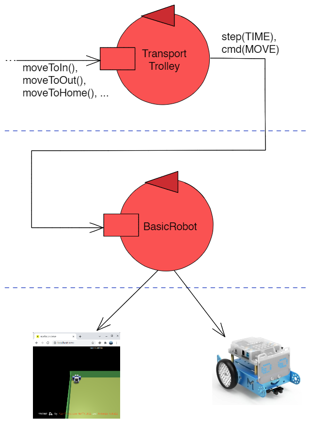

|
The transport trolley is the core entity of the project, as it is responsible for transporting the cars around
the parking. It wraps the basicrobot provided by the customer, which is only capable of executing basic commands
(e.g. move forward, turn, ...), and provides high level macro moves (e.g. moveToHome, moveToIn, ...). In order
to do so, it utilizes the planner provided by the customer. Given the starting and ending point, this
planner is capable to convert them in a sequence of basic moves. It can be visualized as a multi layer system, as expressed in the image on the right. When it receives a macro moves, it breaks it down in multiple basic commands, and it sends them to the basic robot. The basic robot will then send the commands to the virtual environment or to the physical robot, depending on the configuration. |
 |
error(trolleyerror).
./execute.bat runor, on Linux
./execute.sh runAnd for the web server, to go to the sprint3/web folder and run
gradle bootRunSince we are now talking with another entity, it is even necessary to start the basicrobot actor and the virtual environment, going into the root folder and executing
docker-compose -f basicrobotVirtual.yaml up